Remote Repositories
Git status shows we are currently on the master branch we don’t want to push our code to the master branch as the master branch is used for production ready working code. if our work was only partially completed or wrong it would break code that is currently on the master branch and working. It is safer to move our files onto a different branch to make changes.
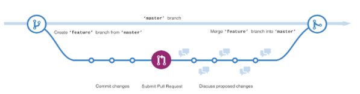We can create a feature branch from master to make our changes in we can stage our files and commit them from the new branch and later when everything is completed and working properly, we can push them to master.
If we were working on a landing page we could type git branch landing page this would create a feature branch called landing page.
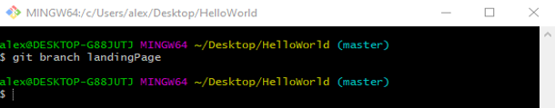We are still on the master branch to change to the landing page branch we need git checkout name of branch git checkout landingPage.
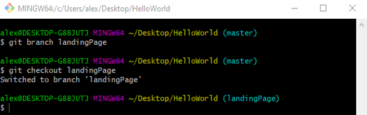Now we are on the landing page branch. This has our index.html file in it and is currently the same as the one in master
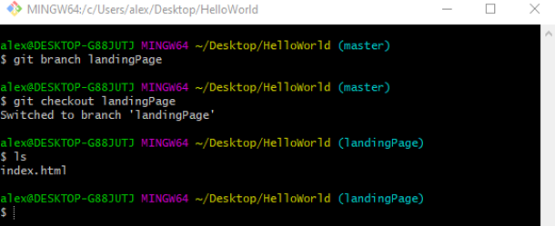But now if we make changes.
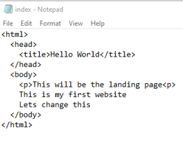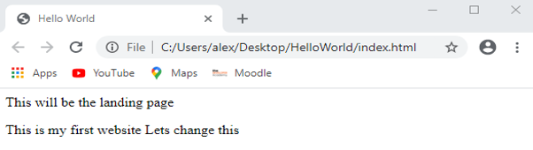
Stage and commit them.
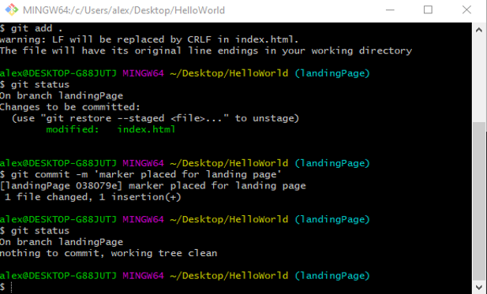They are saved to the landing page branch but not the master branch, we can go back to master to see using git checkout master master still has this version.

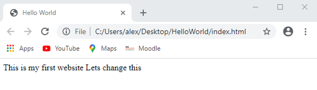
In the landingPage branch we can make changes, stage and commit them and master will not be changed as the commits are being made to the landingPage branch instead of master.
Now everthing is completed we can merge everthing back into master. We need to go into the master branch git checkout master and git merge branch name git merge landingPage.
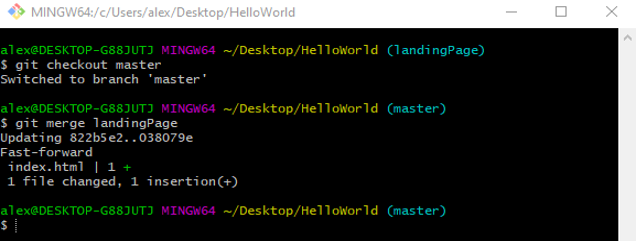Now when we look at index.html from master it includes our changes.
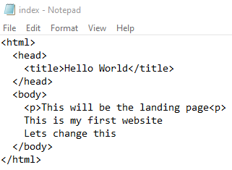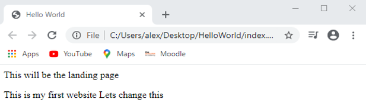